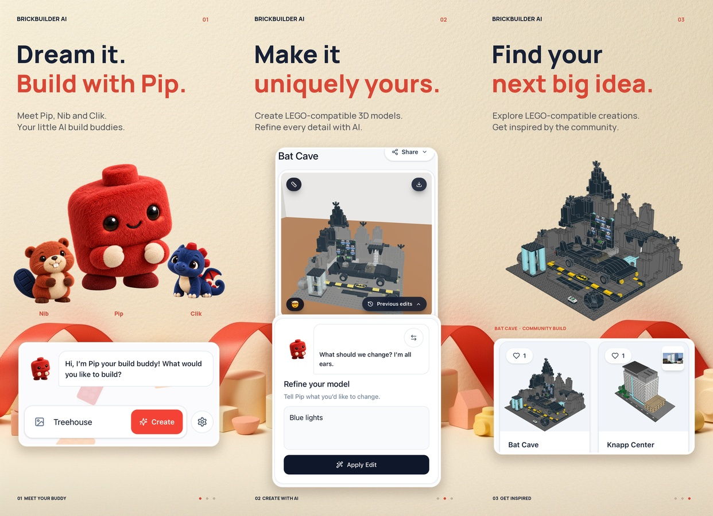
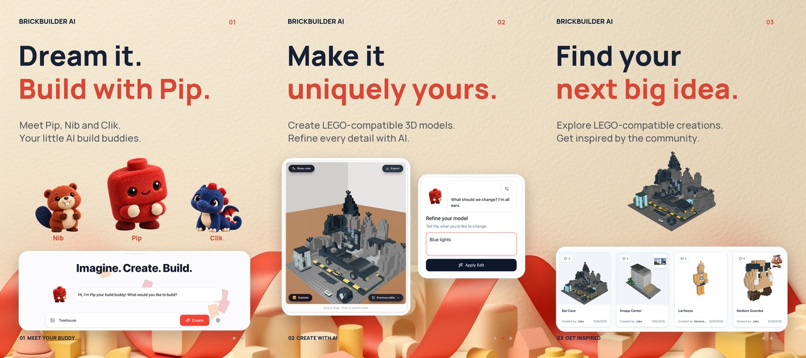
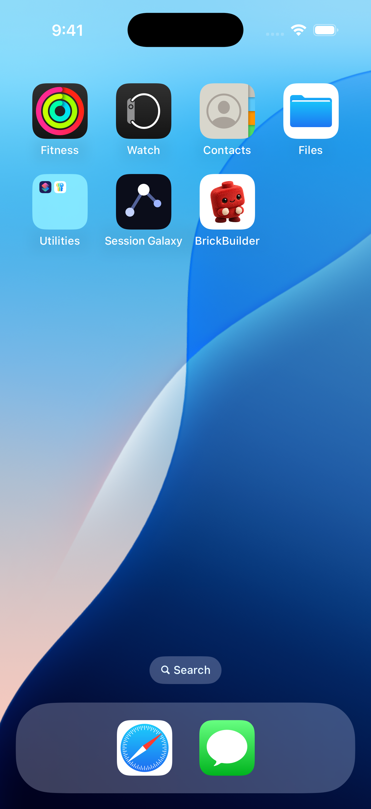

APP STORE CONNECT · 1.0.2 (4) · WAITING FOR REVIEW
Warm Studio screenshots, Pip icon, and refreshed listing copy.Submitted to Apple. Automatic release after approval.
Your selected first option: cream and coral wallpaper, original pets, and real app captures. Screenshots only; no preview videos.


